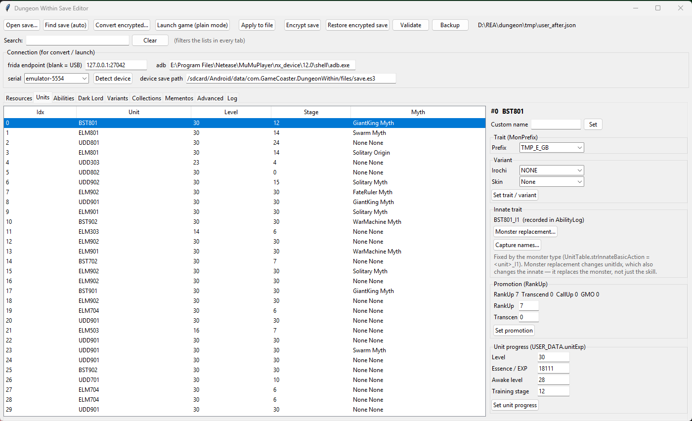
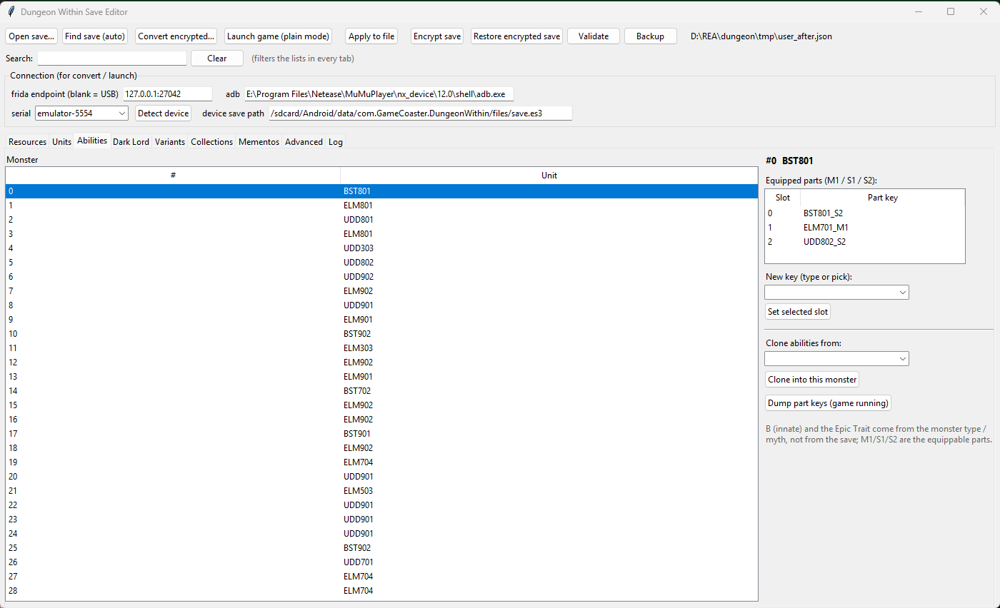
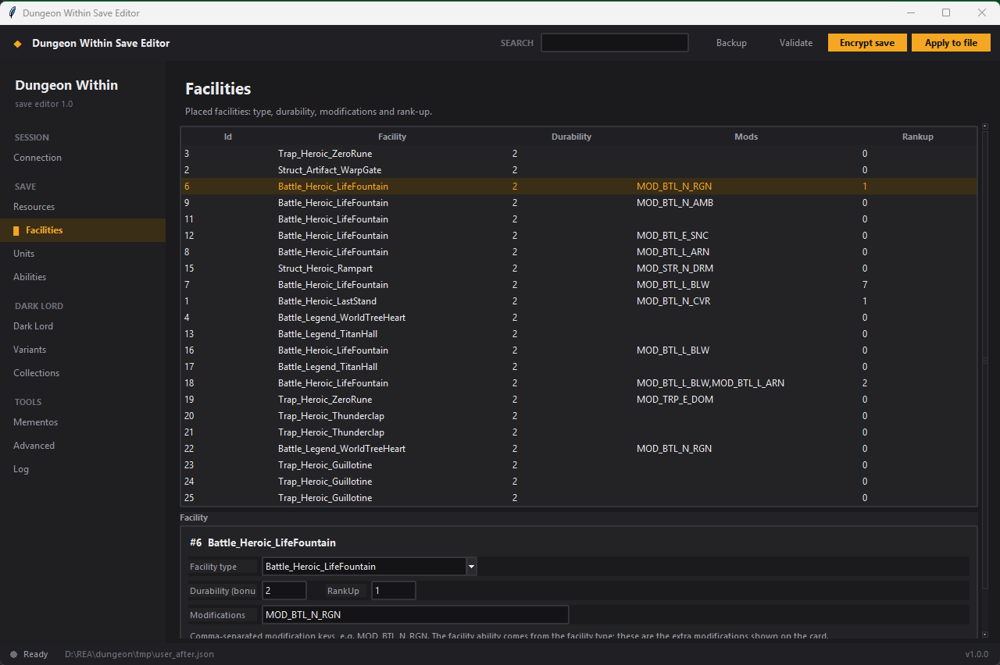
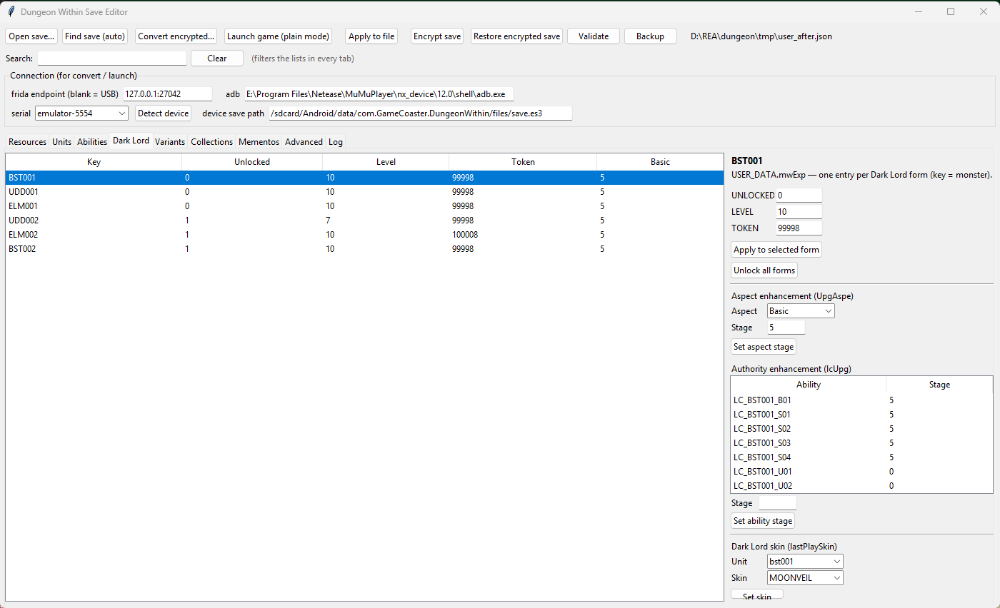

Dungeon Within Save Editor Open-source save editor for Dungeon Within on Android — emulator or rooted phone.
Change gold and resources, monster levels, stats and abilities, facility modifiers, Dark Lord aspects and variants, then encrypt the save back with the game's own code so it loads like a normal save. No AES key is shipped, no offsets are hardcoded, and every edit is checksum-validated.

What you can edit
| Screen | What it does |
|---|---|
| Resources | Every currency and resource in the save (gold, essence, tokens), searchable. |
| Facilities | Facility type, ability modifiers (durability), modifications from a dropdown, rank-up. |
| Units | Monster level, essence, awake and training stage, base stats, custom name, trait, variant, skin, promotion, monster type. |
| Abilities | Equip M1/S1/S2 parts from a 473-key catalog, clone a whole ability set from another monster. |
| Dark Lord | Unlock the six forms, level, tokens, aspect stage, authority stage, skin. |
| Variants | Stored variant counts and variant research levels. |
| Collections | Collection counters used by the codex and costume unlocks. |
| Mementos | Memento buy counts. |
| Advanced | Read or write any JSON path in the save. |
How it works
Dungeon Within stores its save as an ES3E container encrypted by the game's own code.
The editor does not re-implement that crypto. It attaches with Frida, hooks
ES3Saver.DecryptAndDecompress to capture the plain JSON, edits that text while keeping
the ES3 dialect intact, then fills the game's decrypted buffer with your JSON and calls the real
CompressAndEncrypt on the game's thread. The two functions are found by name at runtime
and cached per game version and ABI, so there are no hardcoded offsets.
Screens



FAQ
Is there a Dungeon Within save editor for Android?
Yes. This editor runs on Windows and edits the Android save through adb and Frida; it works with emulators (MuMu, LDPlayer, BlueStacks) and rooted phones, on any ABI.
How do I edit my Dungeon Within save?
Start the game once so the save exists, connect the device, press Find save to decrypt, change what you want, then Apply to file and Encrypt save. The encrypted result is verified by decrypting it again, and the previous save is restored if verification fails.
Do I need the encryption key?
No. The game itself decrypts and encrypts the file; the editor only drives it.
Will it work after a game update?
Usually yes. The two crypto functions are located by name and the offsets are cached per
version:abi; a new build only needs one calibration run.
Is it safe for my save?
It keeps backups, verifies the encrypted output against a marker value and rolls back on mismatch. Keep your own copy anyway, and use it on single-player saves only.
Requirements
- Windows 10/11 (the CLI also runs anywhere Python does)
- Windows 10/11 x64 — the release is zero-install (bundles adb and frida-server)
- A rooted device or emulator (root is required by Android for the save and frida-server)
- Nothing else: Prepare device pushes and starts frida-server automatically